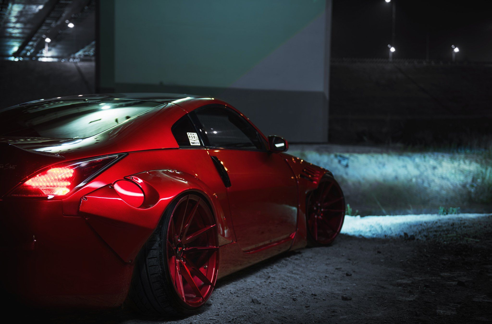

Sobre mí
Me llamo Félix David y soy un apasionado de los coches y el fútbol. Me encanta pasar tiempo aprendiendo sobre motores y nuevas tecnologías en la industria automotriz, además de disfrutar viendo y jugando al fútbol.
Mis aficiones

Coches
Los coches son una de mis mayores pasiones. Me gusta explorar las últimas tendencias, desde coches deportivos hasta vehículos eléctricos, y sueño con poder conducir algunos de los modelos más icónicos del mundo.

Fútbol
El fútbol es más que un deporte para mí, es una forma de vida. Me encanta jugar con mis amigos y seguir a mis equipos favoritos. El fútbol me ha enseñado disciplina, trabajo en equipo y perseverancia.